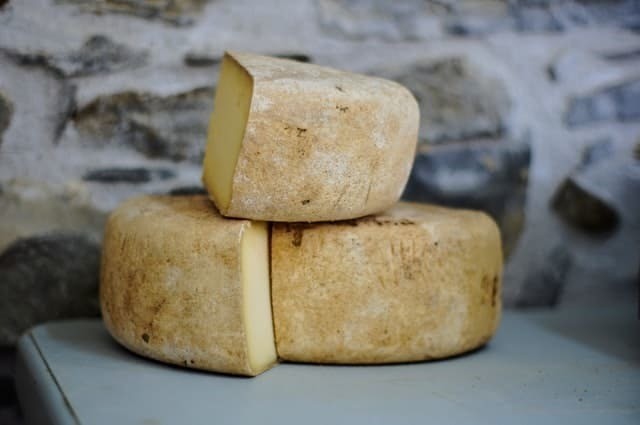

乳糖不耐症の鍼灸
消化酵素ラクターゼ不足で乳製品後に下痢や腹痛を起こす状態。食事管理と並行し胃腸と自律神経を整えます。
まず知っておきたい要点と改善の流れ
小腸で乳糖を分解する消化酵素ラクターゼが欠乏・不足し、乳糖を十分に消化吸収できない状態です。遺伝や加齢に伴う一次的要因、腸炎やセリアック病などの小腸粘膜損傷による二次的要因、未熟児の発育要因があります。未消化の乳糖が大腸で細菌発酵することでガスが発生し、腸内へ水分を引き込んで下痢や腹痛を起こします（牛乳アレルギーとは別疾患です）。（公式解説）
このようなお悩みはありませんか？
- ✓牛乳や乳製品をとると下痢や軟便になりやすい
- ✓食後にお腹が張っておなら（ガス）が増える
- ✓お腹がけいれんするように痛む・吐き気がする
- ✓冷たい牛乳だと特にお腹を壊しやすい
当院の施術アプローチ・改善の流れ
なぜ鍼灸で改善へ向かうのか？（作用機序の図解）
乳糖不耐症に対する鍼灸は、脳腸相関と迷走神経反射による胃腸運動の調整機序を通じて、お体本来の回復力を引き出します。

胃腸機能と深く結びつく四肢・腹部の経穴を刺激し、体性感覚神経から中枢へ信号を送ります。
脳幹を経由した体性-内臓反射により、副交感神経（迷走神経）経由で胃腸の働きを調整します。
弱まったぜん動を促す一方、下痢型の過剰な収縮や内臓知覚過敏は穏やかに鎮静します。
ストレスで乱れにくい胃腸の土台を整え、胃もたれ・便通異常・吐き気の軽減を目指します。
院長YouTube解説・関連動画
乳糖不耐症の症状は、下痢や腹部の膨満、おならなど

乳糖不耐症の症状は、下痢や腹部の膨満、おなら、腹部のけいれん痛、吐き気、酸性便などです。乳児の場合、体重がなかなか増えないという症状が現れることもあります。
乳糖不耐症の症状は、人によって大きく差があります。少しであれば飲むことができてもたくさんの量を飲むと症状が現れるという人やホットミルクは飲むことができても冷たいミルクを飲むと症状が現れる人もいます。
腹痛：乳糖が小腸で適切に消化・吸収されないと、大腸で細菌によって発酵されます。これが腹痛を引き起こす主な原因です。
腹部膨満感：未消化の乳糖が大腸で発酵すると、ガスが発生します。これが腹部膨満感を引き起こします。
ガス：乳糖の発酵により生成されるガスは、放屁として体外に排出されます。
下痢：乳糖は水を引きつける性質があります。そのため、大腸に到達した乳糖は水を引きつけ、液体の便を引き起こします。
吐き気：吐き気や嘔吐は、乳糖不耐症の症状として珍しくはありません。これは特に大量の乳製品を摂取した場合に発生する可能性があります。
乳糖不耐症の改善方法は、乳糖を避けることと、ラクターゼのサプリメントを使うことです。
乳糖不耐症はは、食事を見直すことで症状をコントロールすることができます。乳糖を含む食べものを控えるようにしましょう。主に乳製品を摂らないようにすることで症状をコントロールすることができます。
ヨーグルトには乳酸桿菌が産生するラクターゼが天然で含まれているため、ヨーグルトを摂ることができる人が多いです。さらに、テーズも摂ることができる人は多いです。これは、チーズに含まれる乳糖の量は牛乳より少ないためです。
乳製品の摂取を控えて症状をコントロールする場合は、カルシウムが足りなくなりやすいため、カルシウムのサプリメントを摂ることが大事です。
飲食習慣の変更：乳糖不耐症の主な改善法は、乳糖を含む食品の摂取を制限することです。これには乳製品だけでなく、乳糖を含む加工食品も含まれます。また、一部の乳糖不耐症の人は、乳製品を他の食事と一緒に摂取することで症状を軽減できることがあります。乳製品の摂取を減らすと、カルシウムやビタミンDなどの栄養素が不足する可能性があるため、その他の食品やサプリメントからこれらの栄養素を補うことが重要です。
乳糖分解酵素の摂取：市販の乳糖分解酵素（ラクターゼ）サプリメントを使用することで、乳糖の消化を助け、症状を軽減することができます。これらのサプリメントは、乳製品を摂取する前に服用することで最も効果的です。
乳糖低減乳製品の利用：乳糖を事前に分解して含む乳製品もあります。これらの製品は乳糖不耐症の人にとってより消化しやすい選択肢となります。
栄養相談：乳糖不耐症の人は、栄養士や専門家と相談することで、乳糖を制限しつつ栄養バランスの良い食事を計画することが可能です。
薬：乳糖不耐症の症状が重度で、他の改善方法で症状が改善しない場合、医師は薬を検討する場合があります。しかし、これは一般的な選択肢ではありません。
牛乳アレルギーも乳糖不耐症も牛乳を飲むと腹痛や下痢などの症状が出るという点は似ています。しかし、牛乳アレルギーは食物アレルギーのひとつで、原因となる食物を摂った後、アレルギー反応が起こり症状が現れます。
お腹がごろごろしにくい牛乳を飲んだとき、症状がでにくい場合は牛乳アレルギーではなく乳糖不耐症です。わからない場合や気になる症状がある場合は病院に行くことをお勧めします。
乳糖不耐症の改善例
乳糖不耐症を発症している人に対して行った実際の改善の一例を以下に示します。
・40歳の女性
彼女は過去数ヶ月間、腹痛、ガス、腹部膨満感、下痢の症状に悩まされていました。これらの症状は主に食後に現れ、特に乳製品を飲食した後に強くなる傾向があり、乳糖不耐症であると判断しました。
まず、乳糖を多く含む食品を避けるようにアドバイスしました。また、カルシウムやビタミンDの不足を防ぐために、乳製品以外の食品からこれらの栄養素を摂取する方法についても説明しました。
さらに、彼女には乳糖分解酵素（ラクターゼ）のサプリメントの利用を勧めました。これらのサプリメントは、乳製品を飲食する前に服用することで、乳糖の消化を助け、症状を軽減することができます。
彼女はこれらのアドバイスを実践し、数週間後のフォローアップ時には症状が大幅に改善していました。彼女は乳糖を制限する飲食習慣の変更により、症状を管理できるようになったのです。その結果、彼女の日常生活の質が向上し、特に食事後の不快感が軽減されたと報告していました。
また、彼女は乳製品以外から必要な栄養素を摂取するための新たな食事メニューを見つけることができました。例えば、カルシウムはアーモンドミルクや緑の葉物野菜から、ビタミンDは日光浴やサプリメントから取得するようになりました。
彼女は、初めて乳製品を摂取する際にはラクターゼサプリメントを服用するという方法も試しました。これにより、彼女は少量の乳製品を摂取した場合でも症状を抑制することができ、その生活の選択肢が広がりました。
このケーススタディは、乳糖不耐症の判断と改善がどのように行われるかを示しています。まず、症状と食事パターンを詳しく聞き、乳糖不耐症の可能性があると思われる場合には、呼気水素テストなどを行います。乳糖不耐症であると確定したら、乳糖の制限、乳糖分解酵素の補給、必要な栄養素の補給などの改善法を検討します。

潰瘍性大腸炎・クローン病（IBD）の腸管自律神経ツボ図解
実際の施術ではお一人おひとりの体質・症状に合わせて選穴しますが、炎症性腸疾患（潰瘍性大腸炎・クローン病）・過敏性腸症候群の併用ケアの臨床でよく用いられる代表的なツボの目安です。

📌 代表的なツボの詳細一覧表を開く（6穴） ▼
| ツボ名 | 位置の目安 | 主な狙い | セルフケアの注意点 |
|---|---|---|---|
| 中脘（ちゅうかん） | みぞおちとおへその中間 | 胃腸の蠕動バランス・食後の張り軽減 | 腹痛が強い活動期は押さず温めるだけにします。 |
| 天枢（てんすう） | おへその左右それぞれ指3本分外側 | 大腸の運動調整・下痢や腹鳴の緩和 | 腹部に強い圧痛がある場合は遠隔穴を優先します。 |
| 関元（かんげん） | おへそから指4本分下 | 下腹部の冷え改善・迷走神経を介した腸管鎮静 | 穏やかな温灸が特に相性の良いツボです。 |
| 足三里（あしさんり） | 膝の下外側、指4本分下 | 迷走神経抗炎症反射の活性化・栄養吸収サポート | 日常のセルフケアに最も安全な遠隔穴です。 |
| 上巨虚（じょうこきょ） | 足三里からさらに指4本分下 | 大腸の「下合穴」として腸管機能と排便リズム調整 | すねの外側を優しく押してほぐします。 |
| 三陰交（さんいんこう） | 内くるぶしの上から指4本分上 | 自律神経・睡眠・ストレス性の腸過敏緩和 | 下痢が続く時期の冷え対策にも役立ちます。 |
国際査読論文の科学的エビデンス
国際的な医学データベース（PubMed・Cochrane等）で報告されている炎症性腸疾患（潰瘍性大腸炎・クローン病）・過敏性腸症候群の併用ケア領域の代表的な査読済み鍼灸研究をまとめています（標準治療との併用や研究上の限界を含めて正確に掲載）。
📚 査読論文データ・PubMed出典リンクを開く（4件） ▼
| 年・研究デザイン | 対象・規模 | 主な結果 | 限界・出典 |
|---|---|---|---|
| 2016年 大規模多施設RCT | 慢性重症機能性便秘 1,075名（15病院） | 週平均完全自発排便回数が電鍼+1.76 vs シャム+0.87（P<0.001）、20週追跡時も持続（P<0.001）。 | 20週以降の長期経過は未評価。 Ann Intern Med (PMID: 27618593) |
| 2020年 多施設RCT | 機能性ディスペプシア（PDS）278名（5施設） | 4週時点の総合改善反応率83.0% vs シャム51.6%（P<0.001）、終了後12週間維持。 | 16週脱落率18%・施術者盲検化不可。 Ann Intern Med (PMID: 32422066) |
| 2025年 多施設RCT | 下痢型過敏性腸症候群（IBS-D）280名（6病院） | 6週時点の複合反応率57.9% vs シャム41.4%（RR 1.40, P=0.008）、重篤な有害事象なし。 | IBS-D限定・中国多施設試験。 Gastroenterology (PMID: 40441496) |
| 2017年 メタ解析 | 胃食道逆流症（GERD）12 RCTs（n=1,235） | 鍼＋西洋薬併用は西洋薬単独より総合改善優位（RR 1.17, p=0.03）、再発率低下（RR 0.42, p<0.001）。 | 組入れ試験の質が低く標準治療との併用が前提。 Acupunct Med (PMID: 28689187) |
参考文献・出典
- 銀座そうぜん鍼灸院「乳糖不耐症の公式解説ページ」
- 2016年 大規模多施設RCT（慢性重症機能性便秘 1,075名（15病院））— Ann Intern Med (PMID: 27618593)
- 2020年 多施設RCT（機能性ディスペプシア（PDS）278名（5施設））— Ann Intern Med (PMID: 32422066)
- 2025年 多施設RCT（下痢型過敏性腸症候群（IBS-D）280名（6病院））— Gastroenterology (PMID: 40441496)
- 2017年 メタ解析（胃食道逆流症（GERD）12 RCTs（n=1,235））— Acupunct Med (PMID: 28689187)
よくある質問（FAQ）
Q. 乳糖不耐症と牛乳アレルギーは同じですか？▼
Q. 鍼灸で乳糖を分解できるようになりますか？▼
あわせて読まれる関連疾患（消化器のお悩み）
椎体・肛門・気管食道・橈骨・腎の複数徴候を合併する先天性疾患。専門医管理下で筋緊張や疲労を補完します。
キノホルムによる薬害で生じた神経障害（新規発症なし）。専門医管理下で慢性期のしびれや筋緊張を補完ケアします。
飲酒が主因でない脂肪肝に炎症・線維化が加わった状態。食事と運動での減量を軸に、倦怠感や生活リズムの乱れを鍼灸で支えます。
長期の過剰飲酒で脂肪肝から肝炎・肝硬変へ進む肝障害。専門医管理と禁酒を基本に疲労や自律神経を整えます。
胃の一部が横隔膜の食道裂孔から上方へ飛び出す状態。医療機関での管理と並行し背部緊張や自律神経を整えます。
ガストリノーマによる胃酸過剰で難治性潰瘍を起こす疾患。専門医の治療を第一に、体調・自律神経を補完します。
おひとりで悩まず、まずはご相談ください
銀座本院・川口・大宮・横浜・博多・田無の各院でご予約を承っております。